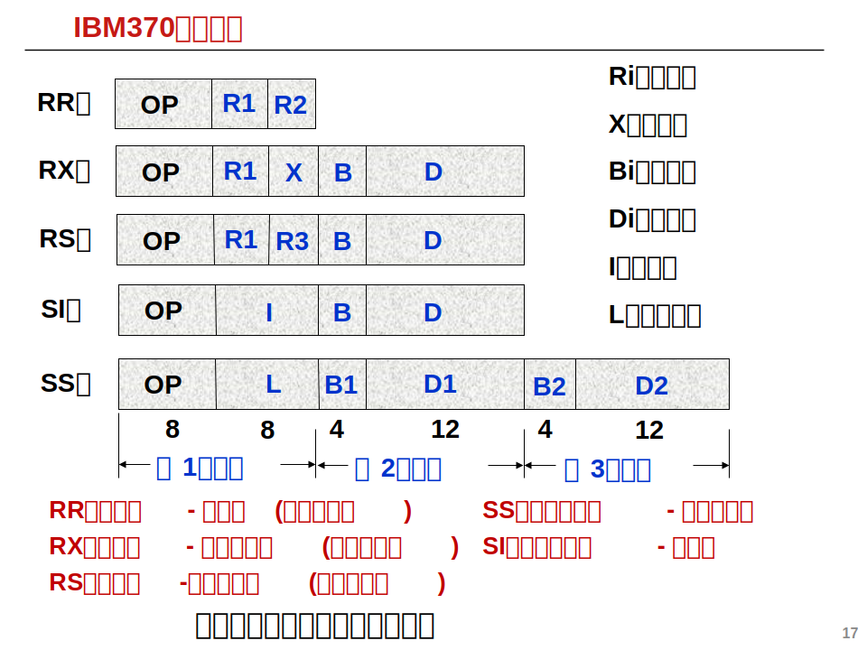
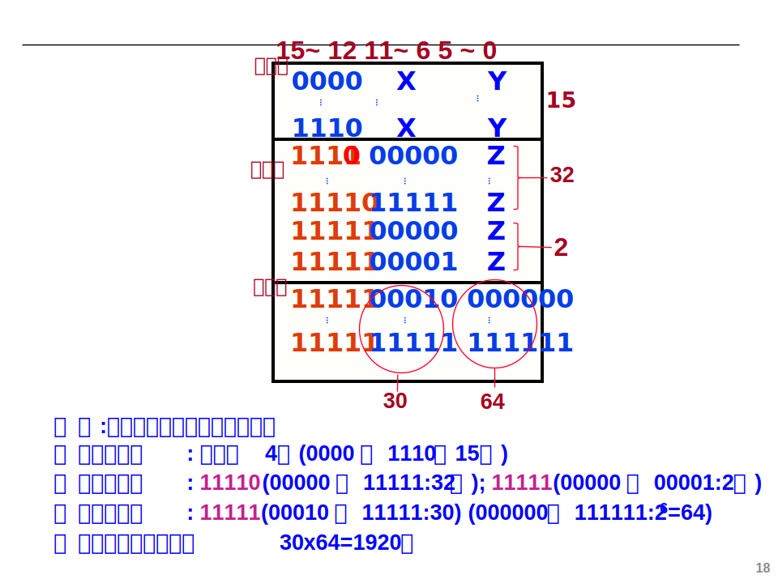
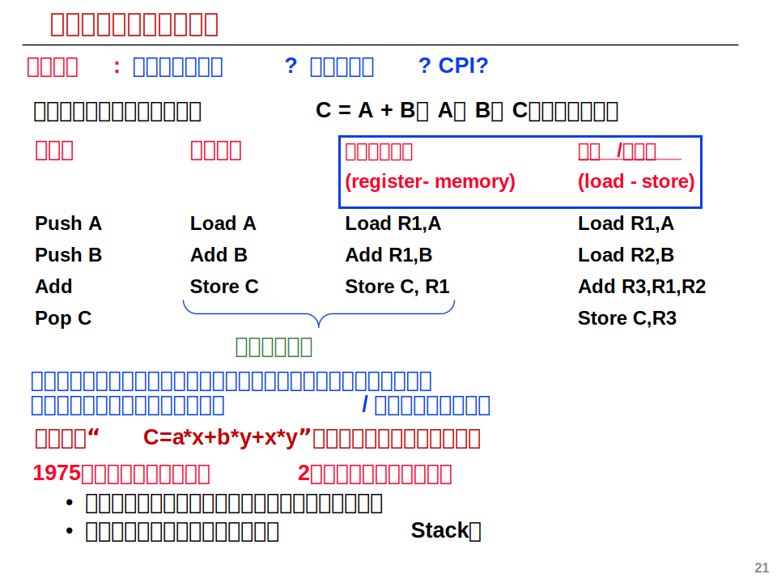
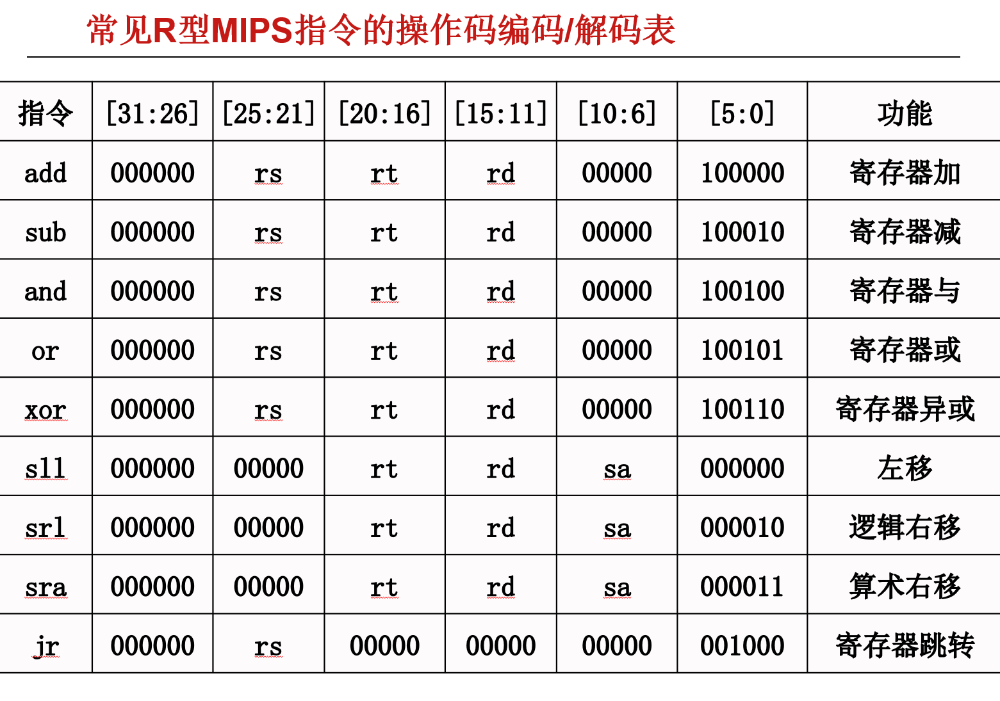
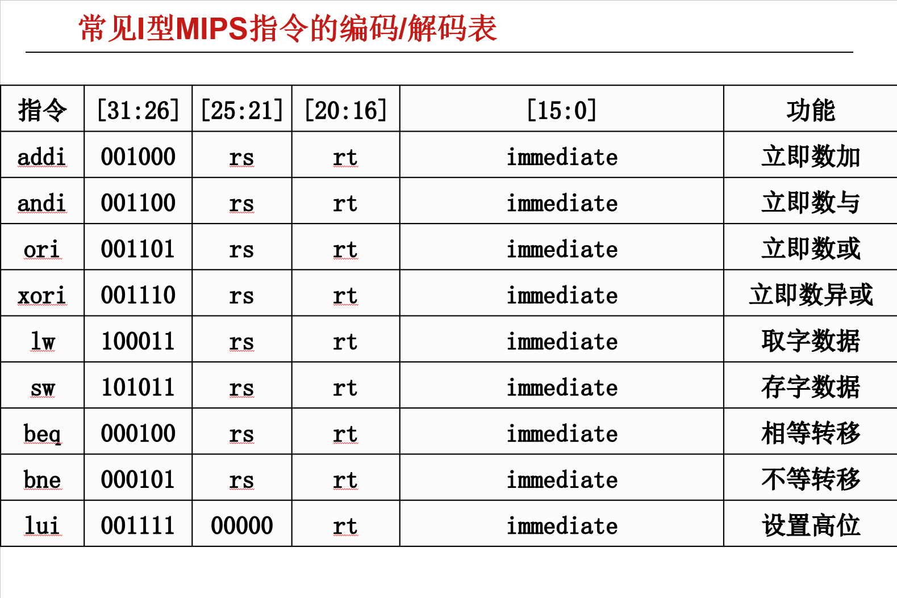
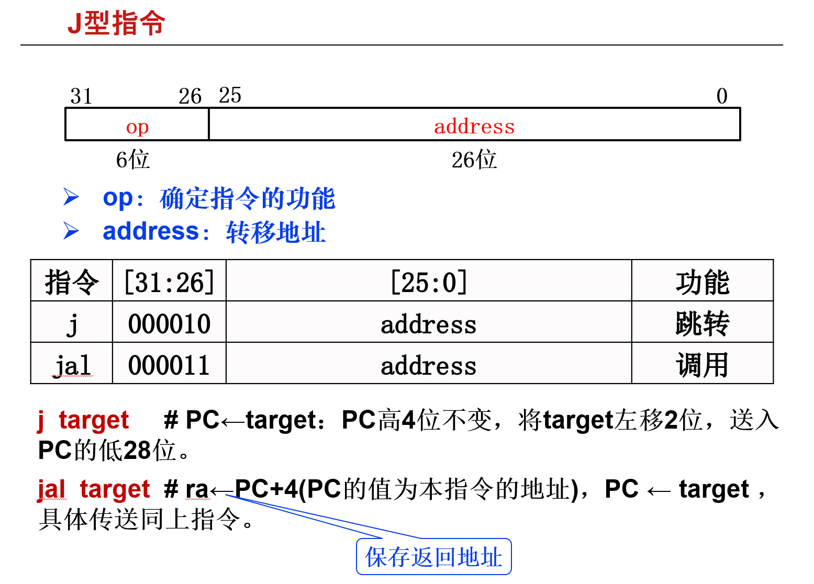
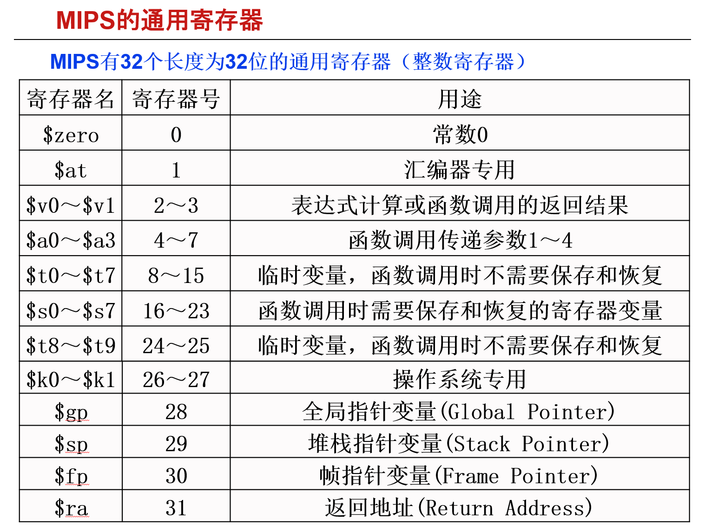
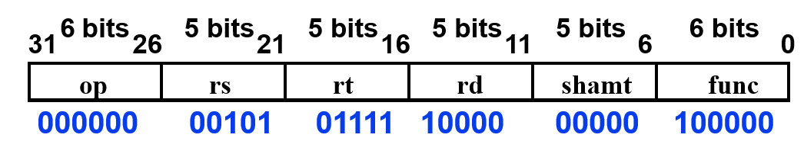
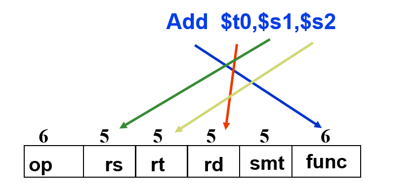

指令系统
本文最后更新于：August 27, 2022 am
Chapter 4: Instruction Set
指令系统的设计
一条指令必须明显或隐含包含以下信息:
- 操作码: 指明操作类型，长度可为固定也可为可变长，在MIPS中为固定长度
- 源操作数或其地址: 一个或多个源操作数所在的地址，可以是寄存器编址也可以是内存地址
- 结果的地址: 产生的结果存放何处(目的操作数)
- 下一条指令地址: 下条指令存放于何处
在不同机器系统中指令系统的指令内地址数量也可能不同。
- 零地址指令:
- 无需操作数 如: 空操作／停机等
- 所需操作数为默认位置 如: 堆栈／累加器等
形式: op
- 一地址指令:
其地址既是操作数的地址，也是结果的地址- 单目运算: 如: 取反／取负等
- 双目运算: 另一操作数为默认的 如: 累加器等
形式: op + A
- 两地址指令(CISC常见):
分别存放双目运算中两个操作数，并将其中一个地址作为结果的地址。
形式: op + A + B - 三地址指令(RISC常见):
分别作为双目运算中两个源操作数的地址和一个结果的地址
形式: op + A + B + C - 多地址指令:
用于成批数据处理的指令，如:向量 / 矩阵等运算的SIMD指令
指令执行的全过程如下:
graph TD
IF("Instruction Fetch(取指)")-->ID("Instruction Decode(解码)");
ID-->OF("Operand Fetch(取操作数)");
OF-->EX("Execute(执行)");
EX-->RS("Result Store(写入)");
RS-->IF;
指令系统设计的基本原则
- 尽量短
- 有足够的操作码位数
- 指令编码必须有唯一的解释，否则是不合法的指令
- 指令字长应是字节的整数倍
- 合理地选择地址字段的个数
- 指令尽量规整
数据的类型
操作数是指令处理的对象，与高级语言数据类型对应，基本类型有:
- 地址(指针): 被看成无符号整数，用来参加运算以确定主(虚)存地址。
- 数值数据:
- 定点数: 用二进制补码表示
- 浮点数: 用IEEE754标准规定表示
- 位、位串、字符和字符串: 用来表示文本、音频和视频等.
- 逻辑数据: 布尔变量，用单位0/1表示。
操作数的寻址方式
寻址方式: 指令或操作数地址的指定方式。即：根据地址找到指令或操作数的方法。在一边情况下我们所讲的寻址方法大多指操作数寻址。
由于操作数有不同的寻址方式，而指令中操作数地址是指令的一部分，因此指令中的地址码编码由操作数的寻址方式决定。
在指令中表示寻址方式主要有两种方法:
- 不设专门的寻址方式位: 例如在MIPS中，一条指令最多含有一个主存地址因此仅有一到两种寻址方式，通过确定指令操作码即可得知指令内操作数的寻址方式。
- 在指令中设置专门的寻址方式位: 如X86指令，一条指令中有多个操作数，且寻址方式各不相同，需要各自说明寻址方式，因此每个操作数有专门的寻址方式位，需要在指令中额外说明。
以下七种寻址方式需要全面了解和掌握！:
设定指令格式为: | op | R | A | ··· |
R为寄存器编号，A为地址字段值，(X)表示A中的内容。
| 寻址方式 | 算法 | 优点 | 缺点 |
|---|---|---|---|
| 立即数寻址 | 操作数=A | 指令执行速度快，因为数据直接存储在指令内 | 操作数的范围小(指令长度有限) |
| 直接寻址 | 操作数地址=A | 有效地址计算简单 | 地址范围小 |
| 间接寻址 | 操作数地址=(A) | 有效地址范围大 | 需要进行多次存储器访问 |
| 寄存器寻址 | 操作数=(R) | 指令执行快，指令短(因为寄存器数量少，需要表达位数少且访问寄存器比访问主存快) | 寄存器数量少 |
| 寄存器间接寻址 | 操作数地址=(R) | 地址范围大 | 需要访问一次寄存器和存储器 |
| 偏移寻址 | 操作数地址=A+(R) | 灵活 | 复杂 |
| 堆栈寻址 | 操作数地址=栈顶内容 | 指令短 | 应用有限 |
偏移寻址又可以因为R可以明显或者不明显给出而分为三种不同的寻址方法:
- 相对寻址: 操作数地址=A+(PC)，此时R为PC(不明显给出)即操作数地址为相对当前指令偏移A的地址。
- 基址寻址: 操作数地址=A+(B)，此时R为B(B为基址寄存器，专门用于存放基址地址的寄存器，也可不明显给出也可明显给出)即操作数地址为相对基地址的地址。
- 变址寻址: 操作数地址=A+(I)，相对于首址A处位移量为(I)的单元，I为变址寄存器即专门存放偏移量的寄存器，可明显给出也可隐含给出。
操作码的编码方法
根据指令系统设计要求，指令的操作码可以是定长的也可以是变长的，本节会介绍这两种操作码的编码方法。
定长操作码
定长操作码: 指令的操作码部分采用固定长度的编码。如设操作码固定为6位，则系统最多可表示64种指令。特点是译码方便，但可能会有信息冗余(操作码未全部使用)。
这里以IBM360/370为例:
提供了8位操作码，能够表示条指令，但指令系统只提供了183条指令，有73种编码为冗余信息。

变长操作码
将操作码的编码长度分成几种固定长的格式。这种方式被大多数指令集采用。由于指令长度为固定值，而不同指令内的操作数数量却不尽相同，因此根据操作数的数量可以将操作码长度分为几种定长的格式，其中又可以分为等长扩展法和不等长扩展法:
- 等长扩展法: 4->8->12···
- 不等长扩展法: 4->5->9->11···
设某指令系统指令字长16位，每个地址码为6位。若二地址指令15条，一地址指令34条，则剩下零地址指令最多有多少条？

条件码和标志寄存器
条件转移指令通常根据Condition Codes (条件码CC/状态位/标志位)转移。一般通过执行算术指令或比较指令，然后用测试指令来检测CC。如判断两个数是否相等通过将两数相减得到ZF标志位，如ZF为1则两数相等。
在ALU运算时会产生常用的四种标志位(条件码): OF、SF、ZF、CF具体含义和产生方法见运算方法和运算部件。标志可存于标志寄存器(也叫条件码寄存器、状态寄存器、程序状态字寄存器)，也可由指定的通用寄存器来存放标志位。
例: bgt r1, r2, label;如果r1>r2，则转移到label处执行；否则顺序执行。
例: 判断A与B的大小
- 无符号数: ZF=0 & CF=0则A>B
- 带符号数: ZF=0 & SF=OF则A>B
指令设计风格
指令系统设计风格即指对于不同操作数地址的指定方式。
- 累加器型: 其中一个操作数(源操作数1)和目的操作数总在累加器中即只给出操作数的存储地址在操作数之一的地址
- 堆栈型: 总是将栈顶两个操作数进行运算，指令无需指定操作数地址
- 通用寄存器型: 操作数可以是寄存器或存储器数据(即A、B和C可以是寄存器或存储单元)
- 装入/存储型: 运算指令的操作数只能是寄存器数据，只有load/store能访问存储器
各种指令系统风格的比较

指令系统举例
这里主要介绍两种指令集:
- 复杂指令集计算机CISC (Complex Instruction Set Computer)
- 精简指令集计算机RISC (Reduce Instruction Set Computer)
CISC
早期CISC设计风格的主要特点:
- 指令系统复杂: 变长操作码 / 变长指令字 / 指令多 / 寻址方式多 / 指令格式多
- 指令周期长: 绝大多数指令需要多个时钟周期才能完成
- 各种指令都能访问存储器: 除了专门的存储器读写指令外，运算指令也能访问存储器
- 采用微程序控制
- 难以进行编译优化来生成高效目标代码
CISC的二八定律: 在程序中各种指令出现的频率悬殊很大，常用的简单指令占程序的80%，但只占指令系统的20%。在微程序控制的计算机中，程序中只占指令总数20%的复杂指令占用了控制存储器容量的80%。
RISC
- 简化的指令系统: 指令少 / 寻址方式少 / 指令格式少 / 指令长度一致
- 以RR方式工作: 除Load/Store指令可访问存储器外，其余指令都只访问寄存器
- 指令周期短: 以流水线方式工作， 因而除Load/Store指令外，其他简单指令都只需一个或一个不到的时钟周期就可完成
- 采用大量通用寄存器，以减少访存次数
- 采用硬连线控制器控制，不用或少用微程序控制
- 采用优化的编译系统，力求有效地支持高级语言程序
程序的机器级表示
MIPS的指令格式
所有指令都是32位宽(字长)，按字地址对齐存储，字地址为4的倍数！
在MIPS中指令共有三种格式:
- R型指令
- I型指令
- J型指令
R型指令
| op | rs | rt | rd | shamt | func |
|---|---|---|---|---|---|
| 6bits | 5bits | 5bits | 5bits | 5bits | 6bits |
因为操作数全部来源于寄存器(register)因此称为R型指令。
- op: 操作码，在R型指令中为固定值
000000，操作类型通过func来指定 - rs: 第一个源操作数
- rt: 第二个源操作数
- rd: 目的操作数
- shamt: 对非移位指令为
00000。移位指令为移位次数

I型指令
| op | rs | rt | imm |
|---|---|---|---|
| 6bits | 5bits | 5bits | 16bits |
指令中包含了一个立即数，所以称为I型指令。
- op: 操作码，指明指令功能
- rs: 第一个源操作数
- rt: 目的操作数
- imm: 16位的立即数，在执行时需要按需扩展为32位的立即数，根据指令不同有以下三种用法:
- 以立即数寻址方式提供的一个源操作数(自己本身就是参加运算的数)
- 作为偏移量，与寄存器rs组成偏移寻址方式，提供一个存储器操作数
- 作为偏移量，与PC寄存器组成相对寻址方式，提供一个转移目的地址

addi rt, rs, imm : rt = (rs) + imm(rs内的数据与立即数imm相加将结果存入rt，在相加之前需要对16位imm进行符号扩展)
andi/ori/xori rt, rs, imm : rt = (rs) &/|/ imm(rs内的数据与立即数imm做与/或/异或操作并将结果存入rt，在相与之前需要对16位imm进行0扩展)
lw rt, offset(rs) : rt = mem[(rs)+offset](从rs内容的offset偏移量地址取出数放入rt寄存器，offset同样取符号扩展)
sw rt, offset(rs) : mem[(rs)+offset] = rt(将rt内容存入mem[(rs)+offset]中，offset同样取符号扩展)
bne rs, rt, imm : if rs != rt then PC = PC + 4 + (imm<<2)(如果rs不等于rt，则PC跳转到PC+4+imm，相加前进行符号扩展，左移2位是为了保证字地址对齐，因为一条指令为4个字节长左移2位刚好放大4倍，因此imm表示转移指令条数而不是地址偏移量)
beq与bne相同，但bne为不等转移，beq为相等转移。
lui rt, imm : rt = imm<<16(将立即数imm扩展左移16位即高位为立即数低位为0存入rt寄存器)
J型指令
| op | target |
|---|---|
| 6bits | 26bits |
指令作用主要为跳转(jump)，因此称为J型指令。
- op: 操作码，指明指令功能
- target: 跳转目的地址，需要根据指令进行按需扩展操作

J型指令数量比较少。
j target : PC = target(PC高4位不变，将target左移2位送入PC的低28位，|op高4位|target|00|)
jal target : ra = PC + 4, PC = target(将下一条指令地址放入ra寄存器，将转移地址按j指令方式放入PC)
MIPS的寄存器
MIPS有32个32位的通用寄存器！

- 0号寄存器$zero为固定值零，不能改变
- 1号寄存器$at被汇编器保留为专用
- k1是留给操作系统专用
- s8寄存器使用
- 在汇编语言中使用寄存器时可以用寄存器名，也可以用寄存器号，前面加上"$",例如，t0
- MIPS还提供了32个32位的单精度浮点寄存器f31。它们可配对成16个64位的双精度浮点寄存器
MIPS的指令寻址方式
**MIPS没有专门的寻址方法字段！**因此只能根据指令类型来判断操作数的寻址方式。
- 寄存器寻址: 广泛出现在R型指令和I型指令中，因为这两种指令均至少有一个操作数是寄存器，因此寄存器寻址必然存在
- 立即数寻址: 在I型指令中有专门的16位imm作为立即数，因此一定存在立即数寻址，比如addi、ori、xori等均为立即数寻址方式
- 偏移寻址: 在I型指令中某些涉及读写内存的指令可能为偏移寻址，比如lw、sw等均为偏移寻址方式
- PC相对寻址: 在I型指令中存在地址跳转指令如bne、beq，在跳转的过程中即可能用到PC相对寻址
- 伪直接寻址: 在J型指令中target字段就是一段目标跳转地址，但是该立即数不是直接使用，与立即数寻址有所差异，而是通过一定的运算(取PC前4位和加上target后左移2位)得到的，因此属于伪直接寻址方式
MIPS的汇编形式与指令的对应
反汇编
例: 32位指令为0000 0000 1010 1111 1000 0000 0010 0000求汇编形式:
指令的前6位为000000(操作码)，根据指令编码表知，是一条R型指令，按照R型指令的格式得到: rs=00101, rt=01111, rd=10000, shamt=00000, funct=100000

根据R型指令表，它是"add"操作(非移位操作)，rs、rt、rd的十进制值分别为5、15、16，从MIPS寄存器功能表知: rs、rt、rd分别为：t7、$s0，故对应的汇编形式为: add $s0, $a1, $t7，功能为将a1寄存器和t7寄存器相加，结果存入s0寄存器。
注意: 汇编的寄存器摆放顺序与指令的操作数顺序不尽相同，如结果寄存器在汇编中为第一个寄存器而在指令中在操作数寄存器后。

高级语言语句的汇编指令表示
高级语言一般提供顺序、选择和循环结构语句，通过编译器将它们翻译成响应的机器级指令。
例: 将C语言赋值语句f = (g + h) - (i + j)翻译为汇编指令
1 | |
例: 设A为100个字的数组，变量g和h分配寄存器s1和s2，用基址寻址从存储器取元素A[8]送s4，分配s3作基址寄存器。
1 | |
在使用I型指令时，如果立即数超过16位补码表示范围，就不能直接给出操作数或偏移量，但可以用lui指令来设置32位寄存器的高16位，可得到一个较大的值。
例: if-then-else语句和"=="判断
1 | |
1 | |
编译器和汇编语言程序员不必计算分支指令的地址，而只要用标号即可！汇编器完成地址计算。
例: "<"判断
1 | |
1 | |
例: loop循环
1 | |
1 | |
本博客所有文章除特别声明外，均采用 CC BY-SA 4.0 协议 ，转载请注明出处！